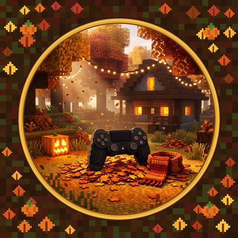

Главный проект
Controllin

Клиент для Minecraft Bedrock с упором на геймпад: меню целиком управляется с геймпада, настраиваются чувствительность и мёртвая зона, есть Gamepad Viewer, Replay и десятки твиков.
1.16.100.41.21.11426.52
Запускается через Controllin Injector: старт игры, загрузка DLL из GitHub-релизов, выдача прав ACL и инъекция.
Selected work / 2025–2026
Инвентарь
Наведи на предмет, чтобы посмотреть, клик — открыть.
Достижения
Сырые указателиC++ и Win32 API
Друг borrow checkerRust, egui, крейты
ГорутиныGo и Fyne
Перехватчик кадровХуки DX11 / DX12
Права выданыACL, AppX, UWP
Коллекционер версий1.1.5 → 26.52
Contact
Написать
Нажми T, как в игре. Сообщение придёт мне через Telegram-бота. Ответить через сайт я не смогу, поэтому оставь свой @username, если ждёшь ответа.
[Сервер] сообщения отсюда приходят anx1ous через бота, ответов в этом чате не будет
[Сервер] нужен ответ — добавь свой Telegram @username или пиши напрямую в @anx1ous